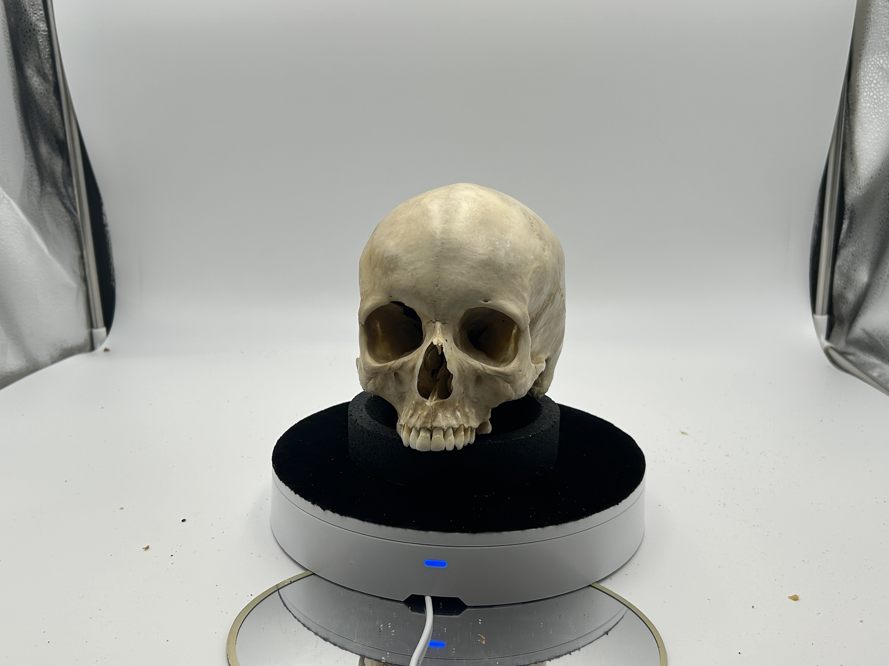

Photgrammetry
Photogrammetry Workflow
Photogrammetry and Slicer Workflow for 3D Geometric Morphometrics
This workflow walks through the process of digitizing skeletal materials via photogrammetry for geometric morphometric analysis in 3D Slicer.
Software:
Foldio 360 Phone App
Adobe Lightroom
Reality Capture
3D Slicer
-Extensions: Slicer IGT & SlicerMorphHardware:
Foldio smart turntable and lightbox
Canon EOS 6D DSLR camera
Photogrammetry
The focus of this section is on capturing data to develop three dimensional models in the Reality Capture software. This walkthrough is a step-by-step guide designed for unfamiliar users.
Turn on the foldio equipment and camera to initialize Bluetooth link between turntable and camera
Ensure that the light box is turned on and the fluorescent room lights are turned off
Open
foldio appon smartphone- Select DSLR 360 from the device information screen
- Click on Select Device at bottom of screen
- Foldio 360 should appear as an option
- Open Select Camera Brand menu and select Canon (either one)
- Under settings select IR remote delay and set to 2 seconds
- On main screen, set number of shots to 36 (you will see the default of 24 on the display. Click this once to change to 36)
- Foldio 360 should appear as an option
Set the camera to Av
- Set the
White BalancetoColor Temperature(hit theQ menubutton and scroll through options until you see white balance) - Set camera to
Manual Focus
- Set the
Place specimen in the center of the turntable
Use a stand/ring mold
If this is a skull, set the beginning position as close to Frankfurt horizontal as possible.

Focus camera on specimen. For best precision, use the magnifying glass button on camera to zoom over focused region.
Once all settings are in place, press the orange button on the foldio app to begin shooting.
- Do not close the app or return to home screen on phone. This will stop the process.
Wait until all 36 photos have been taken. Then rotate antero-superiorly (rotate along sagittal plane)
- To capture all need angles you will need to reposition the skull about 6 times, rotating it approximately 30 degrees in the sagittal plane each time. Your last set of photos should be shot with the frontal bone positioned in the ring mold.
Remove the memory card from the camera and load into Adobe Lightroom on computer
Lightroom
- To view photos, click on import and choose the USB drive
- Find DCIM under 100 Canon
- Make sure that only the photos that you want imported are selected
- Click
Import
- Once photos are imported, click on
Developin top right corner- This will open full view of first photo in the list
- Click on the
eyedropper iconon the right side of the screen and then click on the photo- From this window you can also adjust the Texture and Temp of the file. Increase a bit for more detail but not so much that it begins to highlight details other than the crania (e.g., aspects of the turntable or specimen stand)
- When settings are as you want them, click on
Copyin the bottom left corner. ClickOkon the menu that pops up.- Then hold control and press ‘a’ to select the entire library.
- Click
Syncin the bottom right corner to apply to all- Another pop-up window will appear. Click
Okto sync
- Another pop-up window will appear. Click
- You can switch back to library view from the menu in the top right corner to see if Lightroom is applying your changes to all photos.
- When complete, hit
Exportin bottom left corner and choose a folder to send the images.
Reality Capture
- Open Reality Capture
- Under
Workflowin the ribbon on top should have an icon that saysFolder, click on this and select the folder that your exported photos are in. - Check to see that the images loaded by observing the image count in the window on the left of the screen
- Click on the
Alignmenttab in the ribbon and find/click on theAlign ImagesbuttonWait while the program creates your model
- The resulting image can vary in its presentation. In any case, it will look like a pixelated model of your specimen. If it looks like your specimen in multiple views (i.e., the images didn’t create one cohesive model) you will need to add more photos or begin the process again. If the images come together to create what looks like a good rendition of the specimen you can move on.
- To orient the model, click on the
Toolsbutton in theSCENE 3Dribbon. At the very left of the ribbon menu there are two buttons for setting theReconstruction Regionand theGround Plane. Begin by clickingSet Ground Plane- You will observe three colored rings and three colored bars appear within your model.
- Clicking on any of the colored rings will allow you to rotate your model. Do this until it is in proper anatomical position (for crania, position in Frankfurt Horizontal).
- Once in the correct position, click on the vertical colored bar to drag the model up to place on the ground plane.
- If importing this into
3D Slicer(which we will for this purpose), you will want to orient the image backwords (i.e., when viewed from the front, you are looking at the back). This can be checked by opening theViewmenu under theScene 3Dtab and finding theView Camerabox. The default setting is onPerspectivewhich will be used for orienting the specimens. Click on this to see the dropdown menu and selectFront. Adjust the orientation until this view shows the back of the specimen.
- Click on the
Set Reconstruction Regiontab in the top left menu- A bounding box will appear around your model. Make sure that this box encompasses your entire model (nothing outside the box)
- Setting Scale
- Once the model is properly oriented, move to establishing the correct scale.
- Under the
Toolstab inSCENE 3D, click on theControl Pointstab - A menu will appear on the left of the screen
- Click on the button that says
Control Pointsin this menu and then selectCreate- It will generate an unassigned point (point 0)
- A small pop-up window will appear in the upper right corner of your screen suggesting that control points be assigned in 2D mode. Heed this advice.
Near where this pop-up appeared (top right of model viewer screen) is a small white box that reads
3Ds. Click and hold this button to access the dropdown menu.Open the
2DslibraryImportant. You will need to choose at least 2 different photos to set the control points. If you pressed
Test Connectionon the foldio app when taking photos, you will likely have at least two copies of the first image. Do not use the duplicate shot when setting control points.Click on the first image you want to use and open the drop down menu again.
- Click on
2D, to view this image - Click on the point 0 button that generated earlier. You can now place this point on your image.
- After this point is placed, generate another unassigned point by clicking
create. This will give you ‘point 1’ - Select this unassigned point and place it on the image.
- Click on
There is no protocol yet for what points to use. I am using the nasal height as my metric for setting scale. Thus, I am setting point 0 at Nasion, and point 1 at the tip of the anterior nasal spine
- Return to the
2Dslibrary and click on the second image. Being sure to select the correct points (first point 0, then point 1), assign the points to the corresponding positions on this image.
- Return to the
To set your scale, you will first need to know the distance between these two points. Collect this distance manually on the physical specimen with sliding calipers.
In Reality Capture, under
Toolsin theSCENE 3Dmenu, selectDefine Distance- Click on point 0 in one of your 2D images and drag to point 1
- A box will appear in the menu on the left of your screen (Selected Constraint(s))
- Reality Capture will provide you with a Defined Distance that does not look accurate. Delete the number provided for you and type in the measurement that you collected manually.
- Note that Reality Capture insists on the scale being in meters. If your measurement is in Millimeters (should be), make sure to properly convert the measurement.
- Once your distance is defined, go back to the
AlignmentMenu from the top ribbon.- Click on
Update - If everything went right, this will quickly update the scale for your model
- Click on
- Finishing the Model
- To finish the model making process, return to the
Mesh Modelmenu - Click on the
Normal Detailbutton. - This will take a minute
- When complete, a matte white model will be provided
- Look over the model to ensure that all aspects of your specimen are visible
- If the model includes foreign objects (e.g., parts of the stand), use the
Lassotool provided in theToolsmenu under theScene 3Dribbon.Use this tool to highlight the unwanted objects and click onFilter Selectionto remove.
- With the model completed, we want to compress the file for more efficient computing down the line. This step may or may not be necessary depending on the computing power of the processor being used. Thus, it is a part of our workflow but possibly unnecessary for others. To accomplish this, click on the
Simplifybutton in the sameToolsmenu. We simplify theTarget Triangle Countto 200,000 (Observe theSimplify Toolmenu that appears on the left side of the screen).- Click
Simplifyat the bottom of the menu
- Click
- To finish the model making process, return to the
- Texturize and Export
- With the model completed and simplified, we want to apply the appropriate texture. This can be done by selecting
Textureunder theMesh Modelmenu. - With each step completed we can now export the model to be analyzed in
3D Slicer' - While in the same menu, selectDense Mesh Modelfrom theExportbox - Choose the Folder to save it in (*We create a new folder for each specimen*) PressOkwhen theExport Model` window pops up
- With the model completed and simplified, we want to apply the appropriate texture. This can be done by selecting